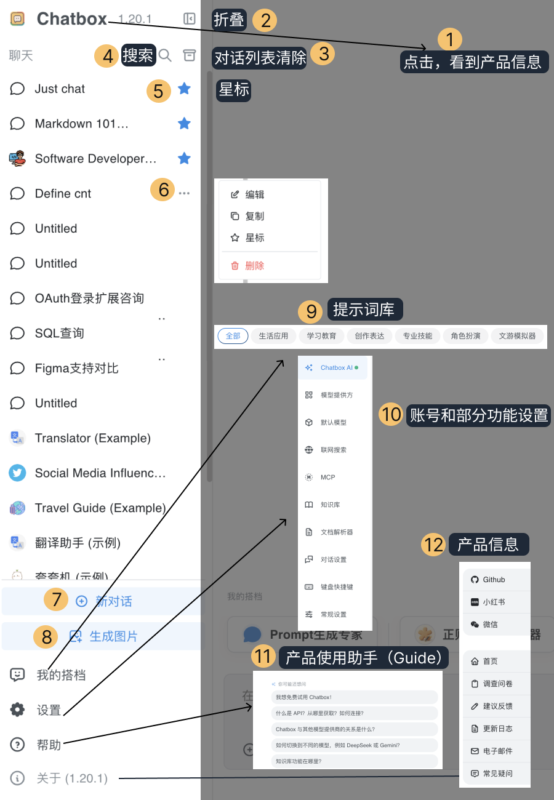

Chatbox 深度盘点：一个本地优先的 AI 对话客户端，到底能走多远
从界面组织、知识库 RAG、自建搭档到数据隐私，完整拆解这款开源 AI 客户端的能力边界与适用场景，帮你判断它值不值得成为日常主力。
市面上 AI 对话客户端不少，但真正能让人长期留下来的没几个。要么绑定死某个模型，要么界面臃肿到找不到功能，要么更糟——把你的对话记录偷偷传到云端。Chatbox 走了一条不太一样的路：它是一个开源的、本地优先的多模型客户端，你可以接任何 API，数据全部留在自己机器上，而且功能密度高到足以撑住深度用户的日常，官网上就能看到它完整的功能清单。
这篇盘点不按文档目录抄结构，也不罗列所有按钮的功能。我想从实际使用的角度，把它的几个核心能力域拆开来看：每个域解决什么问题、亮点在哪、又有哪些绕不开的局限。读完你大概能判断，它适不适合你的工作流。
界面组织：三块面板，九种入口，够用但不花哨
任何工具的第一印象都是界面，先下载装好再说。Chatbox 把主界面分成左栏、对话区、输入框三块，功能入口全部集中在这三处，没有二级菜单套二级菜单的操作。
左栏从上到下依次是：Logo（版本与反馈）、折叠按钮、对话批量清理、搜索、星标置顶、单对话设置、新对话、生成图片、我的搭档、设置。十个入口里日常高频使用的其实只有三个——左下角设置改 API Key 或模型偏好，右下角模型切换在多模型并行测试时特别方便，输入框上的知识库和联网搜索图标在需要扩展能力时一键开关。其余功能用到的频次没那么高，但关键时刻能省不少事，比如批量清理对那些每次测试都新建对话的人来说是刚需。

对话区的工具条相对克制：对话设置可以调温度和 Top P、改背景色；搜索支持当前会话内找历史回复，也能跨所有记录全局搜；历史话题入口是个容易被忽略的好东西——同一个搭档下可以并行多条话题线，互不干扰。
输入框最有意思，它的工具栏八个图标把扩展能力全部前置了：上传资料、MCP 工具开关、知识库挂载、联网搜索、新话题、对话设置、Token 估算、模型选择。这种把"能力开关"直接塞进输入框的设计思路，让扩展能力不再是藏在设置里的玄学，而是对话过程中随时可调的开关。
知识库：私有文档变第二大脑，RAG 在这里落地
知识库功能是桌面端独有的，也是 Chatbox 和其他通用客户端拉开差距的地方。核心思路很简单：你的公司产品手册、课程讲义、项目文档、个人笔记——这些模型的通用知识里没有的东西，一次性导入本地建立索引，之后任何对话都可以挂上它，让 AI 基于你的资料作答。
工作流程走的是标准 RAG 链路：文档在本地做解析和切片，切片转成向量建立索引，对话时先按问题检索出最相关的段落，再连同问题一起交给模型生成回答。关键点在于文档本身不离开你的机器，参与回答的只是检索出的片段。
它和"临时上传文件"的分工也很清晰：一次性的深读或临时问答用上传就行，长期资料反复查询必须上知识库——比如你有一份三百页的产品规格书，临时上传每次都要等模型重新读一遍，建知识库后第一次挂上去就能直接检索回答，速度差了不止一个量级。
版本上从 1.15 版才引入，移动端和网页版至今没有这个功能，这意味着如果你主要在手机上用，知识库这块是完全用不上的。
自建搭档：四段式骨架写人设，迭代比推倒重来更有效
预置搭档是好用，但十个里面有七八个不够贴你的具体场景。自建搭档本质上就是写一份好的系统提示，Chatbox 给了一个四段式骨架可以直接套用：角色定"你是谁"，原则定"怎么判断"，格式定"长什么样"，边界定"什么不做"。
写好人设有三条值得记住的经验：给它贴一段你理想输出的样板，比十句形容词管用；写清"不做什么"比写清"要做什么"更能防止人设跑偏——比如"不要主动扩展话题""没问到的方面不要写"；迭代的时候别推倒重来，用几次发现哪句输出不顺就补一条对应规矩，逐步收敛。
搭档和工作模式是两个独立的维度：搭档管"怎么回答"，工作模式管"怎么动手"。两者可以叠加，想造一个"既懂行又能干活"的助手，两边都要设，具体的 Soul 配置和搭档叠加玩法翻一下Chatbox文档就清楚了。造出来之后先拿三个真实任务试运行，每轮微调一次，稳定下来就是你的专属助手了。
数据与隐私：全部在本地，无云同步，迁移靠手动
Chatbox 最核心的卖点之一就是"数据在本地"。Windows 用户的数据目录在 %APPDATA%\chatbox\，macOS 在 ~/Library/Application Support/chatbox/，Linux 在 ~/.config/chatbox/。目录里存着全部对话历史、应用设置、自定义提示词和搭档数据、模型提供方配置——包括你填的 API Key，所以别随手把整个目录打包发给别人。
这个设计带来一个清晰的好处和一个清晰的代价：好处是你对数据拥有完整控制权，应用内导出一份就是原始备份，卸载后数据目录可能残留，想彻底清除手动删目录就行；代价是没有云同步，各设备数据各自独立，换机迁移必须走应用内的导出导入，直接复制目录在跨平台时不可靠。
知道数据路径还有一个排障用途——应用异常时先确认目录存在和大小，判断数据还在不在，比瞎重装省时间。
短板也要说：移动端残缺、无云同步、工作模式有门槛
没有完美的工具。Chatbox 的几个短板是结构性的，不是加个功能按钮就能补完的：
移动端残缺：知识库、工作模式、MCP 工具这些重度功能都只在桌面端有，手机端就是个简化的对话壳。如果你主要在通勤路上用 AI，Chatbox 可能不是最优选择。
无云同步：没有账号体系也就没有同步，多设备使用者必须接受手动迁移这个现实。对于重度依赖手机加桌面双端协同的场景，这是个硬伤。
工作模式有门槛：Agent 工作模式虽然强大，但配置起来不像普通对话那样零门槛，需要理解工具调用、工作目录这些概念，对新手不友好。
什么样的人该用它
最后收个尾，三类人最能吃中 Chatbox 的点：
重度 AI 对话用户：每天跟模型打交道，需要多模型快速切换、自定义搭档、对话记录本地留存——这些都是 Chatbox 的强项，而且开源意味着你不用担心哪天突然收费或功能砍半。
有私有文档检索需求的人：手里有大量内部资料、课程笔记、项目文档，希望 AI 能基于这些资料回答而不是凭通用知识瞎编。知识库 RAG 功能的本地化特性，在隐私敏感的场景下尤其有价值。
喜欢折腾定制化的玩家：从自建搭档、工作模式到 MCP 工具接入，Chatbox 给了充足的可玩空间。四段式骨架写人设、搭档和工作模式的叠加配置，适合那些追求"AI 助手完全按自己的规矩办事"的用户。
反过来，如果你只是偶尔用 AI 问个简单问题，或者主要在手机端使用，或者依赖云同步多设备协同，Chatbox 可能就显得过重了——这些场景下更轻量的选择比比皆是。
工具没有银弹，关键是它的核心能力能不能卡中你最痛的那个点。
Chatbox 作为开源项目，相关的文档和资源我同步到了三个仓库——GitHub、Gitee、GitCode，国内外访问都方便。